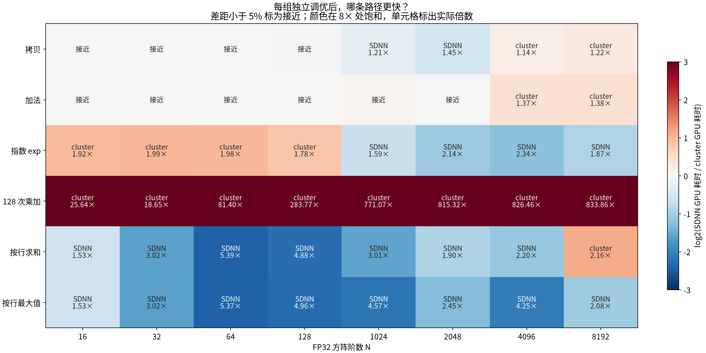
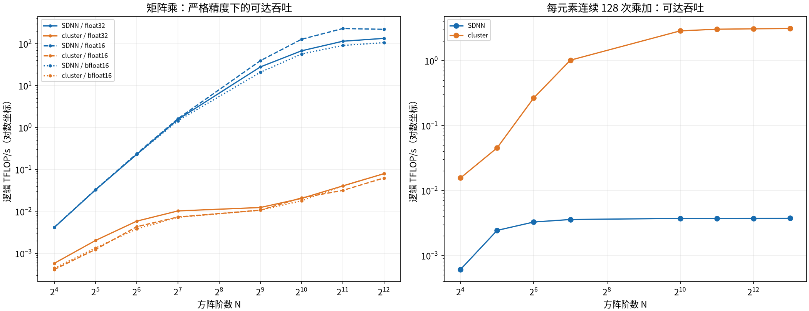

P800 · 单一计算微基准 · 2026-11-02
SDNN 与 cluster，分别适合哪些计算？
88/88 组完成 · 精度阈值未放宽 · 批量翻倍差异不超过 2.6% · 远端测试文件已清理
矩阵乘倾向 SDNN；寄存器内密集乘加倾向 cluster。拷贝、逐元素和归约需要结合规模判断，不能按“所有归约”或“所有逐元素”一概选择。
本实验比较两条编译路径各自搜索得到的最快正确配置，覆盖小矩阵和大矩阵，不使用 F06 融合图或 Inductor。数值代表固定工具链、这些输入和搜索空间中的可达性能，不能视为经过证明的硬件理论峰值。
规模与计算类型
共 88 组：GEMM 为 N=16、32、64、128、512、1024、2048、4096，分别测 FP32、FP16、BF16；拷贝、加法、exp、128 次乘加、按行 sum/max 为 N=16、32、64、128、1024、2048、4096、8192。拷贝覆盖三种数据类型，其他逐元素/归约为 FP32。

这里比较的是 GPU 时间；5% 以内的差别标为接近。密集乘加采用与固定容差相符的 FMA 或乘加表达式，吞吐按逻辑浮点运算量计算。
计算吞吐

GEMM 按 2N³、连续乘加按 256N² 计 FLOPs。高精度参考和输入生成不计入 GPU 时间。
全部测量
GPU 时间为 CUDA Graph 重放下每次内核的微秒数。端到端为设备输入就绪后的单次 Python 调用及同步耗时；不含输入分配、主机传输、预转置、编译或调优。带宽按逻辑读写字节计算，较小工作集可命中缓存，不能把它们的最高值当作 HBM 带宽。
精度与计时口径
- GEMM 使用 FP64 CPU 参考，输出与累加为 FP32；FP32 atol/rtol=3e-4，FP16/BF16 atol/rtol=0.003。拷贝按位相等，max 精确一致；未放宽容差。
- 输入由固定种子产生，GEMM/普通逐元素输入范围为 [-0.5,0.5)，exp 为 [-8,0)。乘加递推 y←0.99y+0.001，共 128 次。结论不覆盖任意动态范围、非方阵、非连续张量或尾部形状。
- 两条路径分别调优分块、布局与适用的编译参数；最终配置在新进程中锁定复测。每组两种资源在同一张物理卡、相同输入上运行，按 SDNN→cluster、cluster→SDNN 测量，每条路径合计 14 个 GPU 样本和 22 个同步调用样本，取中位数。Graph 按同一约 4 ms 的目标累积 GPU 时间选择批量（最多 4096 次），耗时按实际内核次数归一化，摊薄固定开销。两条路径可使用不同批量，以免慢路径重复过量；均使用相同的 CUDA Graph / 事件计时方法。
- 独立输入再次校验；输出先填 NaN，验证完整写入。改变 Graph 捕获地址上的输入后分别重放，每条路径重新填 NaN 再检查，避免缓存结果或前一内核输出掩盖错误。
- 99 条低延迟路径完成 Graph 批量翻倍校验；归一化耗时比为 0.984–1.026。
- B 的连续布局与预转置布局均在计时前准备。GPU 时间衡量输入已准备好时的计算能力；单次端到端也不包含这项预处理，实际业务还需加上布局转换成本。
- 不调整时钟、不重置设备；每张卡同时仅运行一个本任务测量进程。记录物理设备/PID、ECC、时钟、编译器版本、源码和生成二进制的 SHA256。
编译与适用范围
环境为 P800 OAM 96GiB、驱动 5.0.21.47、FlagTree 0.7.1a1+xpu3.6、Triton 3.6.0、Torch 2.9.0+cu128 的 XPU 后端。每个候选核对真实 XPU 后端、arch=3 和 is_sdnn 元数据；cluster GEMM 使用乘法/归约或外积，避免 tl.dot 自动路由到 SDNN。
调优中发现 cluster 循环布局、显式 FMA 和部分分组/旧展开参数的编译或运行时缺陷。失败候选不计入结论，受影响案例在新进程中复测。SDNN 的通用长乘加链、cluster 的 GEMM 都受当前生成代码影响，因此不能用它们的差距直接推断两种硬件单元的原始算力比。乘加用例是每元素 128 步的连续依赖链，未采用专门的多累加器指令峰值基准；其 TFLOP/s 不能当作硬件 FMA 峰值。原始 IR 被此发布版隐藏，保留了实际生成的 ELF/xpubin 和编译元数据。
测试依赖在本地下载后上传，服务器全程不下载依赖。所有远端测试文件均位于 zhaoweiming 目录。完整归档已在本地逐一核对 4,260 个文件。本次远端测试目录已删除，恢复约 26.8 GB 数据盘可用空间；/data2/zhaoweiming 仍归该账号所有并可写。